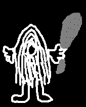

De: La Frikipedia, la enciclopedia extremadamente seria.
De: La Frikipedia, la enciclopedia extremadamente seria. De: La Frikipedia, la enciclopedia extremadamente seria.
| Introducción | Bunda |
|---|---|
| Los Bunda (Australopithecus Bundadensis)eran una tribu prehistórica .En esta página aparecen ilustraciones de varios de los miembros del poblado Bunda. |
| Obispo Bunda | Descripción |
|---|---|
| Se trata del Obispo del pueblo.Como se puede apreciar , el cristianismo nació en ese pueblo de la mano de Jesús de Neanderthal. |
| Descripción | Guardia Bunda |
|---|---|
| En esta imagen se puede apreciar como la Menetéricarl ya existía. |
| Bunda Heavy | Descripción |
|---|---|
| Como se puede observar , los Bundas escuchaban jebi que hacían chocando piedras y retorciendole los huevos a los gatos(hasta ahora ni la mejor distorsión de guitarra ha conseguido imitar ese sonido)y no ,el de la imagen no lleva medias. |
| Descripción | Bunda albino y del opus |
|---|---|
| ¿inspirarme en un famoso libro? que va,para nada. |  |
| Bunda Rico | Descripción |
|---|---|
| Esta foto es de Lord Caveman ,quién se hizo rico introducciendo en el pueblo la siguiente clase de Bunda. |
| Descripción | Bunda Inmigrante Ilega |
|---|---|
| Muchos de los miembros de las tribus vecinas(como los Bonda o los Binda) marchaban a Bundatown a ganarse los garbanzos. |
| Bunda matemático | Descripción |
|---|---|

|
Si ,uno de los Bunda destacó en las matemáticas ¿no saben quién es? es John Napier (si ,el cabrón de los logaritmos). |
| Descripción | Bunda femenino |
|---|---|
| Si,en el pueblo también había mujeres-Bundas .Esta además es charcutera. |
como nunca volvió a Bundatown,en esa zona ,esta religión esta poco difundida.
¿Inspirarme en un anuncio de móviles de los años 90 para el nombre de la tribu? Que va, para nada.
Autor(es):